Linear Algebra¶
The linear module (best.linalg) defines several functions that cannot be found in numpy or scipy but are extremely useful in various Bayesian problems.
- best.linalg.kron_prod(A, x)¶
Multiply a Kronecker product of matrices with a vector.
- The function computes the product:
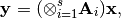
where
 are suitable matrices.
The characteristic of the routine is that it does not form the
Kronecker product explicitly. Also,
are suitable matrices.
The characteristic of the routine is that it does not form the
Kronecker product explicitly. Also,  can be a
matrix of appropriate dimensions. Of course, it will throw an
exception if you don’t have the dimensions right.
can be a
matrix of appropriate dimensions. Of course, it will throw an
exception if you don’t have the dimensions right.Parameters: - A (a matrix or a collection -list or tuple- of 2D numpy arrays.) – Represents the Kronecker product of matrices.
- x (numpy 1D or 2D array.) – The vector you want to multiply the matrix with.
Returns: The product.
Return type: A 2D numpy array. If x was 1D, then it represents a columntmatrix (i.e., a vector).
Here is an example:
>>> import numpy as np >>> import best.linalg >>> A1 = np.array([[2, -1, 0], [-1, 2, -1], [0, -1, 2]]) >>> A2 = A1 >>> A = (A1, A2) >>> x = np.random.randn(A1.shape[1] * A2.shape[1]) >>> y = best.linalg.kron_prod(A, x)
You should compare the result with:
>>> ... >>> z = np.dot(np.kron(A1, A2), x)
The last ones forms the Kronecker product explicitly and uses much more memory.
- best.linalg.kron_solve(A, y)¶
Solve a linear system involving Kronecker products.
- The function solves the following linear system:
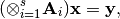
where
are suitable matrices and
 is a vector or a matrix.
is a vector or a matrix.Parameters: - A (a matrix or a collection -list or tuple- of 2D numpy arrays.) – Represents a Kronecker product of matrices.
- y (a 1D or 2D numpy array) – The right hand side of the equation.
Returns: The solution of the linear system.
Return type: A numpy array of the same type as y.
Here is an example:
>>> import numpy as np >>> import best.linalg >>> A1 = np.array([[2, -1, 0], [-1, 2, -1], [0, -1, 2]]) >>> A2 = A1 >>> A = (A1, A2) >>> y = np.random.randn(A1.shape[1] * A2.shape[1]) >>> x = best.linalg.kron_solve(A, y)
Compare this with:
>>> z = np.linalg.solve(np.kron(A1, A2), y)
which actually builds the Kronecker product.
- best.linalg.update_cholesky(L, B, C)¶
Updates the Cholesky decomposition of a matrix.
We assume that
 is the lower Cholesky decomposition
of an
is the lower Cholesky decomposition
of an  matrix
matrix  , and we want to
calculate the Cholesky decomposition of the 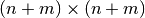
matrix:
, and we want to
calculate the Cholesky decomposition of the 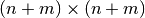
matrix:
It can be easily shown that the Cholesky decomposition of
 is given by:
is given by:
where

and

Parameters: - L (2D numpy array) – The Cholesky decomposition of the original matrix.
- B (2D numpy array) – The
 upper right part of the new matrix.
upper right part of the new matrix. - C (2D numpy array) – The
 bottom diagonal part of the new matrix.
bottom diagonal part of the new matrix.
Returns: The lower Cholesky decomposition of the new matrix.
Return type: 2D numpy array
Here is an example:
>>> import numpy as np >>> import best.linalg >>> A = np.array([[2, -1, 0], [-1, 2, -1], [0, -1, 2]]) >>> A_new = np.array([[2, -1, 0, 0], [-1, 2, -1, 0], [0, -1, 2, -1],\ ... [0, 0, -1, 2]]) >>> L = np.linalg.cholesky(A) >>> B = A_new[:3, 3:] >>> C = A_new[3:, 3:] >>> L_new = best.linalg.update_cholesky(L, B, C)
to be compared with:
>>> L_new = np.linalg.cholesky(A_new)
- best.linalg.update_cholesky_linear_system(x, L_new, z)¶
Update the solution of Cholesky-solved linear system.
Assume that originally we had an
lower triangular
matrix and that we have already solved the linear
system: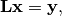
Now, we wish to solve the linear system:

where
is again lower triangular matrix whose
top  component is identical to
and
component is identical to
and  is 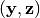. The
solution is:
is 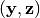. The
solution is:
where 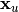 is the solution of the triangular system:

where 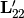 is the lower
component of 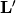 and 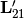 is the
 bottom left component of .
bottom left component of .Parameters: - x (1D or 2D numpy array) – The solution of the first Cholesky system.
- L_new (2D numpy array) – The new Cholesky factor (see best.linalg.update_cholesky())
- z (numpy array of the same type as x) – The new part of .
Returns: The solution of the linear system.
Return type: numpy array of the same type as x
Here is an example:
>>> A = np.array([[2, -1, 0], [-1, 2, -1], [0, -1, 2]]) >>> A_new = np.array([[2, -1, 0, 0], [-1, 2, -1, 0], [0, -1, 2, -1], ... [0, 0, -1, 2]]) >>> L = np.linalg.cholesky(A) >>> B = A_new[:3, 3:] >>> C = A_new[3:, 3:] >>> L_new = best.linalg.update_cholesky(L, B, C) >>> L_new_real = np.linalg.cholesky(A_new) >>> y = np.random.randn(3) >>> x = np.linalg.solve(L, y) >>> z = np.random.randn(1) >>> x_new = best.linalg.update_cholesky_linear_system(x, L_new, z)
and compare it with:
>>> x_new_real = np.linalg.solve(L_new_real, np.hstack([y, z]))